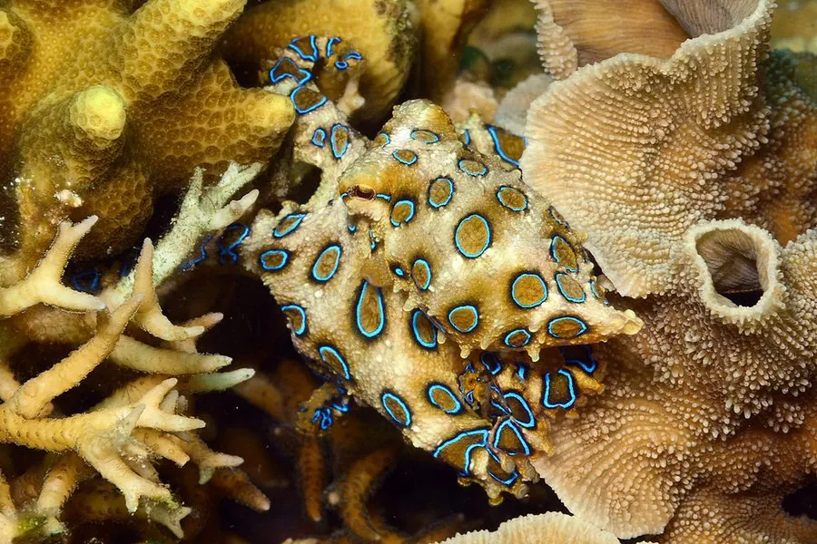

软体动物 · 动物界
蓝环章鱼 Hapalochlaena lunulata

体型只有巴掌大小，身上布满鲜艳蓝环，受惊时蓝环会发亮，体内含河豚毒素，是世界上最毒的海洋动物之一。
- 分类
- 门软体动物门纲头足纲目八腕目科蛸科属蓝环蛸属
- 栖息环境
- 热带浅海的珊瑚礁、潮池和礁石缝隙，水深 0–20 m
- 地理分布
- 印度洋至西太平洋热带海域，包括日本南部、菲律宾、印度尼西亚、巴布亚新几内亚和澳大利亚北部
- 保护级别
- 暂无评估；中国未列入国家重点保护野生动物名录
物种志
蓝环章鱼体型很小，外套膜长约 4–5 cm，连腕全长约 10–20 cm，体重通常只有几十克。平时体色黄褐，身上散布着数十个蓝色小圆环，受惊时色素细胞收缩，蓝环会变得格外鲜艳闪亮，作为警告信号。它的八条腕足相对短小，腕上排列着吸盘，口部藏在腕足中央，具坚硬的角质颚。
蓝环章鱼分布于印度洋至西太平洋的热带浅海，包括日本南部、菲律宾、印度尼西亚、巴布亚新几内亚和澳大利亚北部，多藏身于珊瑚礁、潮池的礁石缝、贝壳和空瓶罐中，水深一般不超过 20 m。它夜行性，白天躲藏，夜间捕食小蟹、小虾和底栖甲壳类。最危险的是它的唾液腺中含有河豚毒素，毒性极强且没有特效解毒剂，被咬后可能迅速出现呼吸麻痹，需要立即进行人工呼吸并送医。蓝环章鱼通常不主动攻击人类，危险多来自误触和把玩。它雌雄异体，雌鱼产卵约 50–100 枚并守护至孵化，之后死亡。目前它没有IUCN 的正式评估，中国也未将其列入国家重点保护野生动物名录。
形态与习性
- 食性捕食小蟹、小虾和底栖小甲壳类
- 体长外套膜约 4–5 cm，连腕全长约 10–20 cm
- 体重通常只有几十克
- 毒素唾液腺含河豚毒素，咬伤可致呼吸麻痹
- 繁殖雌鱼产卵约 50–100 枚，护卵 1–2 个月后死亡
- 栖息深度热带浅海礁石区，水深 0–20 m
趣味知识
- 蓝环章鱼身上的蓝环平时并不显眼，受惊时色素细胞收缩，蓝环才会闪亮警告。
- 它的河豚毒素由共生细菌产生，加热和冷冻都不能破坏，且没有特效解毒剂。
- 蓝环章鱼体型只有巴掌大却毒性极强，遇到时不要用手触摸。